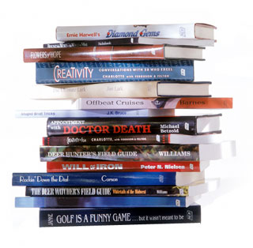

Čitalački dan
Ako ste se jutros probudili u Beogradu, onda vam je sve jasno. Kiša je padala, pada, i padaće. Bilo bi idealno pustiti laku muziku i dan provesti čitajući nešto lepo i ugodno. Danas počinje i Sajam knjiga, te je to još jedan razlog za nominaciju ovog ponedeljka za Čitalački dan.
***
Gde su knjige, tu su i biblioteke, ili obrnuto, tako bi to trebalo biti, ali moje lično iskustvo je da između želje da zaboravim zapuštene i u vremenu zaostale biblioteke koje sam nekad morala da koristim, i dolaska onlajn biblioteka do nas, biram knjige bez biblioteka.
Ipak, evo dva detaljčića iz bibliotečkog života. U jednom tekstu iz februara ove godine objavljenom u Glasu javnosti gde se govori o bibliotekama u Srbiji, kaže jedan savetnik iz Ministarstva kulture: "Trudimo se da ravnomerno budu zastupljeni naslovi iz svih oblasti. Pre tri-četiri godine sve biblioteke su poslale spiskove potrebnih knjiga. Međutim, to se pokazalo nepraktično. Hteli su knjige koje građani najčešće traže, pa su se tako na tim spiskovima našle ekranizovane serije poput Kasandre."
Tako, naravno, nije samo kod nas.
Evo, recimo, Estonija (koju volim da koristim kao slučaj za poređenje, pošto smo tako daleko i tako malo imamo očiglednih zajedničkih tačaka).
U tekstu o estonskoj književnosti i literarnom životu nedavno pročitah:
"Internet databases reveal that in extreme cases, village libraries hold 15 copies of Barbara Cartland on their limited shelf−space and not a single work by LeoTolstoy, not to mention the great names of Estonian literature. While almost all small local libraries subscribe to the gossip magazine Kroonika, the cultural journals Vikerkaar (Rainbow) and Looming (Creation) are indeed rare guests
on their shelves."
Takva situacija, naravno, ljuti estonske pisce i književno udruženje. Ali bibliotekari imaju svoje razloge:
"But the local librarians, tough and assertive ladies that they usually are, were not taken aback by the criticism. Public libraries are important centres of local social activity, they argued, and their financing depends to a certain extent on attendance. The task of the libraries is as much to meet the demands of readers as to shape them. Anyway, the egocentric, obscure, and obscene works of
contemporary Estonian authors are surely not the right stuff with which to bait visitors. The latter point, though not explaining the absence of world classics from many public libraries, does contain a grain of truth."
***
Kod nas je Narodna bibloteka godinama dodeljivala nagradu za najčitaniju knjigu godine u bibliotekama Srbije, no nakon što se došlo do toga da se nekoliko godina za redom ta nagrada dodeljuje Ljiljani Habjanovć Đurović nagrada je preimenovana u priznanje za najbolju knjigu u javnim bibliotekama Srbije. Objašnjenje direktora NBS je da bibliotekari ne žele da učestvuju u ulagivanju čitaocima, "u populizmu i demagogiji, slatkorecivosti i mitomanstvu, izmisljanju takozvanih korisnih obmana, ulagivanju i udovoljavanju predrasudama…"
***
Obavezno pitanje za kraj: Šta vi čitate i šta bi ste preporučili za dan kao ovaj?
 RSS feed
RSS feed
 sadržaji se objavljuju pod
sadržaji se objavljuju pod
Komentari
Ovde u Kanadi biblioteke stvarno drze sve zivo: od filmova i muzike, preko misterija, ljubavnih romana, magazina do kvalitetne literature, ali oni imaju fondove pa mogu, mada se stalno zale da im treba jos. Neke knjige imaju samo u par primeraka i to ne svaka bransa biblioteke, ali preko interneta narucim kopiju i prva slobodna dodje do moje branse a ja je pokupim. Sve to jako dobro funkcionise, bar kad sam ja u pitanju.
A knjige: Woman in the dunes, od Abo Kabea (japanac, sad sam u tom fazonu, sledeca je jedna knjiga od nobelovca Kenzabura Oe), jedna od najpoznatijih japanskih knjiga. Kod nas je prevedena osamdeset i neke i najverovatnije se vise ne moze naci. Izvini... :) Kad smo kod japanaca: The wind-up bird chronicle. The best of Murakami.
Raymond Carver: Cathedral (price). Da ti izbije vazduh iz pluca.
Italo Calvino: Difficult Loves (takodje kratke price).
sit-a-bit | 22.10.07 16:40
Pa da, tako bi i trebalo da bude: Da ima svega. Dovoljno. Ili lako nabavljivo. Recimo da ja bas hocu da procitam Kasandru, iz nekog razloga. Bolje da to uzmem iz biblioteke, nego da moram da kupujem. A sa druge strane, to da bi biblioteke trebalo da imaju kapitalna dela, podrazumeva se. No, kod nas nije tako. U jednom od ovih tekstova pročitah da se za biblioteke dobiju 30ak primeraka najznačajnijih knjiga godišnje, a javnih biblioteka ima 180 ili tako nešto.
I havala za preporuke!
la lara | 22.10.07 17:17
Upravo sam pročitala Doplera, (Erlend Lu), a tu je i Ispeci pa reci od Ivana Klajna. Kad bismo svi bar ponekad otvorili ponešto od Klajna, bolje bismo se izražavali. Preporučujem.
elektrokuhinja | 22.10.07 17:35
ja trenutno čitam Doživljaje dobrog vojnika Švejka! Eto to mi nekako došlo pod ruku u zgodnom trenutku, i ja se začitao :)). I to neko najodvratnije izdanje što se kupovalo uz Novosti ili već nešto, sa milion slovnih grešaka, na onom groznom papiru
ljube | 22.10.07 21:28
Poslednja knjiga koju sam procitala su Gojine utvare-nije mi se svidela. Previse je je pisana kao scenario. Citala sam Doplera-odlicna je,Komo, Murakamija-Birthday stories, Boris Miljkovic-Fabrika hartije, a trenutno citam Kiran Desai-Nasledjeni gubitak
what the fuck | 23.10.07 07:33
Ja sam juče u wcu sajma naletela na Ljiljanu Habjanović. Laro, srdačno preporučujem Istoriju ljubavi, i ne samo zbog ovoga :) - http://img2.timeinc.net/people/i/2007/gallery/celebbookclub/sarah_jessica_parker.jpg
Mandara | 23.10.07 10:20
Jel' je imaš?
La Lara | 23.10.07 10:26
Nemam
Mandara | 23.10.07 11:39
Sta uopste pise ta LjHDj?
ubipacijentic | 23.10.07 15:19
Piše ljubiće izmixovane sa pravoslavljem i istorijom
la lara | 23.10.07 16:55
Ja trenutno pokusavam da paralelno citam netom pribavljenu najnoviju knjigu vec pominjanog Beppe Severgninija "L'Italiano. Lezioni semiserie", koju toplo preporucujem, Brochove "Mesecare" i deo ulova sa sajma, "Carstvo" Daniela Kovaca i "Sekspir iza ogledala" Zorice Becanovic-Nikolic. Imam nejasan osecaj da se to nece dobro zavrsiti... Enivejz, ovo sve da bih preporucila Severgninija, znam da si fan :) Poz'
Blob | 27.10.07 00:25
Gde si Blob, nema te sto godina. Gde si nabavila Severgninija?
la lara | 27.10.07 09:45
U ilegali, ali sve pomno pratim iz prikrajka:)
Severgnini je prijehao u Srbiju blagodareci zloupotrebi prijateljskih veza sa dijasporom. Ukoliko zelis, mogu da ti dam jedan krug...
Blob | 27.10.07 13:11
Ja bih, kad vec pitas:)
la lara | 27.10.07 19:00
Cim obidje porodicni krug, javljam se na mail. Moze?
Blob | 27.10.07 22:57
Da, hvala!
la lara | 28.10.07 10:05